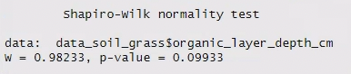
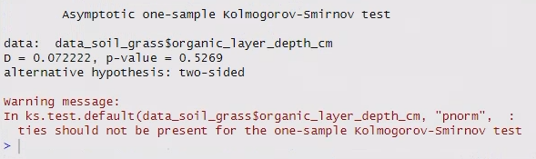

13 Formal tests to assess Normality
The Shapiro-Wilks and Kolmogorov-Smirnov (K-S) tests are more quantitative methods of evaluating whether or not your data are Normally-distributed.
Essentially, these tests look for the difference between your data points and a Normal distribution with the same mean and standard deviation, and tell you whether or not this difference is statistically significant.
13.1 Which test to use
The Shapiro-Wilks test is more sensitive and powerful than the K-S test.
Therefore, it is generally recommended to use Shapiro-Wilks when you have smaller sample size (n < 50). It has been shown to work well with samples as small as n = 20.
For larger sample sizes (n > 50), the K-S test is less likely to find a false positive, i.e. find a significant difference from Normality, despite the date being Normally distributed.
13.2 Defining hypotheses
First we should define our hypotheses. They are:
- \(\mathrm{H}_0\): The distribution of the [e.g. tree circumference] data is not significantly different to a Normal distribution. (It is a normal distribution)
- \(\mathrm{H}_\mathrm{A}\): The distribution of the [e.g. tree circumference] data is significantly different to a Normal distribution. (It is not a normal distribution)
When you run these tests in R, you will get output that looks something like this:


The critical points in these outputs are:
- the test statistics (W for Shapiro-Wilk and D for Kolmogorov-Smirnov)
- the p-value
You can ignore the warning message about ties for the K-S test.
If you have repeated values (i.e. “ties”) in your data due to rounding, it will make the test slightly less likely to reject the null hypothesis, but that’s generally okay.
However, this might affect your decision for how much to round your data.
The test statistics here are a measure of the difference between the distribution for the data and the distribution for a specified distribution (Normal in this case).
The p-value is the probability of being wrong if we reject the null hypothesis. If P < 0.05 we normally reject the null hypothesis.
For example, here the p-values of 0.10 (S-W test) and 0.53 (K-S test) for the grassland depth data mean a 10% and 52% probability of being wrong if we decide to reject the null hypothesis (\(\mathrm{H}_0\): the distribution is not significantly different to a Normal distribution).
Since we are quite likely to be wrong, so we not should reject \(\mathrm{H}_0\), i.e. the distribution is not significantly different to a Normal distribution. The larger the p-value the more likely it is that the distribution is Normal.
13.3 Shapiro-Wilk test
The function in R for the Shapiro-Wilk test is shapiro.test().
Run the test below on the tree diameter data.
shapiro.test(mydf$mycol)Q: Are the tree diameter data Normally distributed?
Based on the Shapiro-Wilk tests:
- We can reject the null hypothesis for tree diameter being Normally distributed.
The histogram and boxplot also supports this decision. When we accept the null hypothesis, it doesn’t mean that we are 100% confident that our data are exactly Normal, simply that we couldn’t detect a difference from a Normal distribution.
Be careful!:
- With very large sample sizes (when strict Normality is less important), the test is more likely to cause you to reject \(\mathrm{H}_0\).
- With small sample sizes (when it’s very important to know if your data are non-Normal), you are more likely to accept \(\mathrm{H}_0\).
Therefore, we should ALWAYS pay strict attention to the histograms and descriptive statistics in addition to these tests when making a decision about Normality.
13.4 Kolmogorov-Smirnov test
Now let’s do the Kolmogorov-Smirnov test and see if we get the same answer for rejecting or accepting our null hypotheses.
The function for Kolmogorov-Smirnov test is ks.test(). It can actually test for other distributions besides the Normal distribution. It takes 4 arguments in a specific order:
- the data
- the distribution to test for - for Normal, use the argument
"pnorm"- with the quotation marks - the mean of the data
- the sd of the data
Our code for the K-S test will take three lines:
- In the first two lines, we’ll store the mean and SD of our data to make them easier to refer to in the test.
- In the third line we’ll run the test.
Write the code below into your R script.
# K-S test
# - need to calculate and store the data's mean and sd before running test
mean_mc <- mean(mydf$mycol)
sd_mc <- sd(mydf$mycol)
ks.test(mydf$mycol, "pnorm", mean = mean_mc, sd = sd_mc)Run the K-S test for the tree diameter data.
Q: How do the answers from the K-S test compare to the answers from the W-S test?